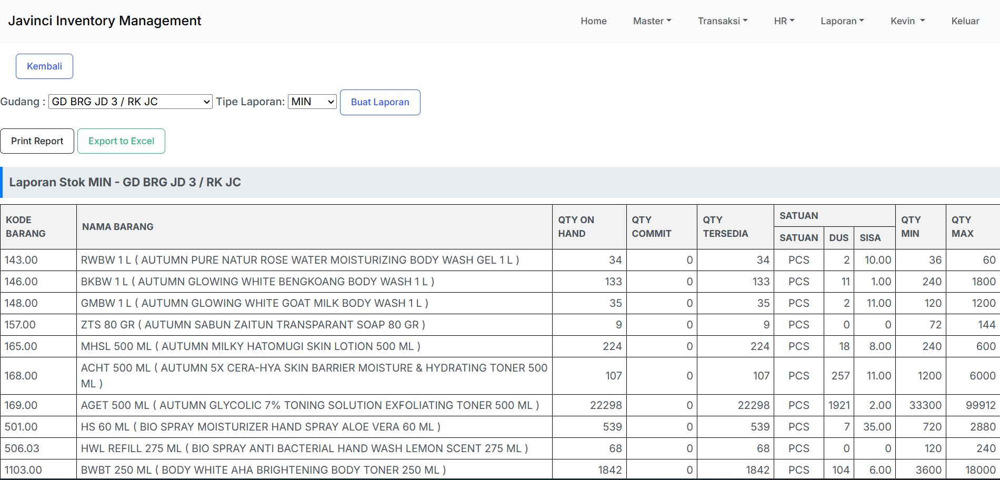

INTERNAL BUSINESS APPLICATION

Internal Inventory Management System
The Problem
Inventory and operational records were maintained in separate spreadsheet files that had to be stored and managed individually. Access to up-to-date information and centralized reporting was more difficult, requiring a structured and centralized data management approach.
The Solution
An internal web application backed by PostgreSQL providing centralized data management, integrated inventory and purchasing workflows, goods receipt and QC modules, stock monitoring and reporting, structured database storage, and easier data retrieval and filtering.
Python
Django
PostgreSQL
JavaScript
AJAX